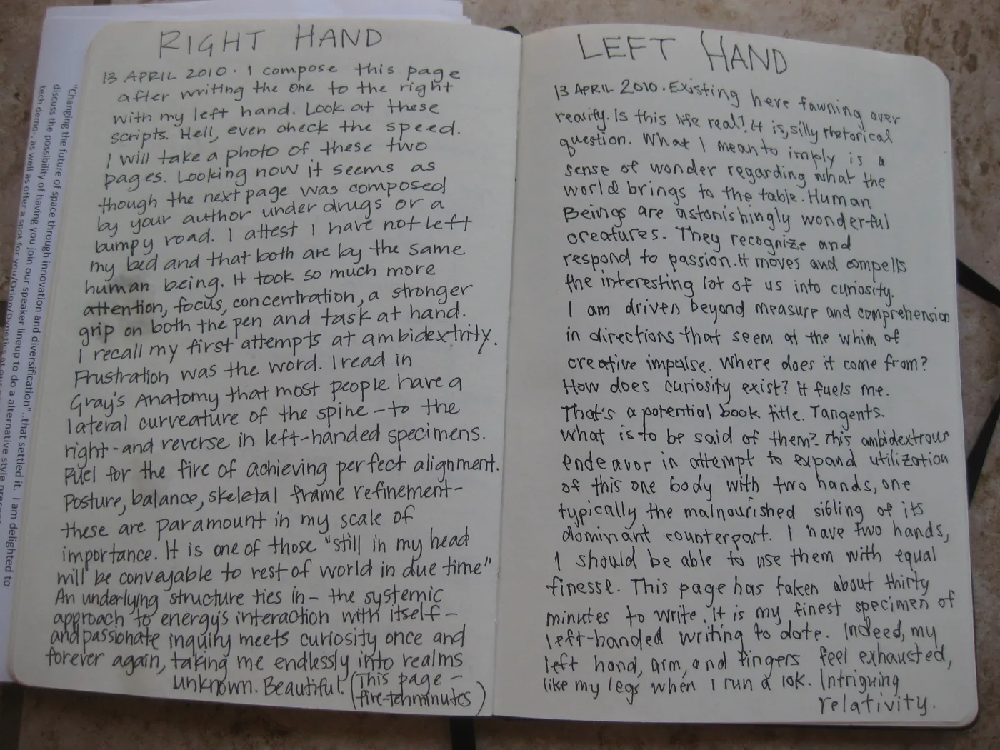

Blog · June 24, 2010
Diary of Ambidexterity
A musician at TEDxAtlanta taught himself to play guitar with his left hand after a nerve affliction made it impossible for him to continue playing with his right. Becoming ambidextrous is a monumentally difficult undertaking. I know because I have taught myself to do it as well.
Just days before the conference I wrote the following pages, pictured at the bottom of this post. I shared them with Billy after his final performance. Years I have practiced to reach this moderate level of dual articulation.
I am vibrant with life and curious and intrigued to the nth degree. The notes convey this so I have decided to transcribe their contents for you:
Page 1: LEFT HAND.
“13 April 2010. Existing here fawning over reality. Is this life real? It is, silly rhetorical question. What I mean to imply is a sense of wonder regarding what the world brings to the table. Human beings are astonishingly wonderful creatures. They recognize and respond to passion. It moves and compells the interesting lot of us into curiosity. I am driven beyond measure and comprehension in directions that seem at the whim of creative impulse. Where does it come from? How does curiosity exist? It fuels me. That’s a potential book title. Tangents. What is to be said of them? This ambidextrous endeavor in attempt to expand utilization of this one body with two hands, one typically the malnourished sibling of its dominant counterpart. I have two hands, I should be able to use them with equal finesse. This page has taken about thirty minutes to write. It is my finest specimen of left-handed writing to date. Indeed, my left hand, forearm, and fingers feel exhausted, like my legs when I run a 10K. Intriguing relativity.”
Page 2: RIGHT HAND.
“13 April 2010. I compose this page after writing the one to the right with my left hand. Look at these scripts. Hell, even check the speed. I will take a photo of these two pages. Looking now it seems as though the next page was composed by your author under drugs or a bumpy road. I attest I have not left my bed and that both are by the same human being. It took so much more attention, focus, concentration, a stronger grip on both the pen and task at hand. I recall my first attempts at ambidexterity. Frustration was the word. I read in Gray’s Anatomy that most people have a lateral curvature of the spine – to the right – and reverse in left-handed specimens. Fuel for the fire of achieving perfect alignment. Posture, balance, skeletal frame refinement – these are paramount in my scale of importance. It is one of those “still in my head will be conveyable to rest of world in due time.” An underlying structure ties in – the systemic approach to energy’s interaction with itself – and passionate inquiry meets curiosity once and forever again, taking me endlessly into realms unknown. Beautiful. (This page – five to ten minutes).”
This is the first time I have directly shared my personal notes with the public. Enjoy this glance into my thoughts to myself.
I wonder what our taking on of difficulty says about who we are. I wonder what the degree to which you laboriously follow passion in pursuit of the difficult says about who you are.
Be Inspired,
Amy


Notes
First published on my old blog, amyrobinson.wordpress.com, June 24, 2010.